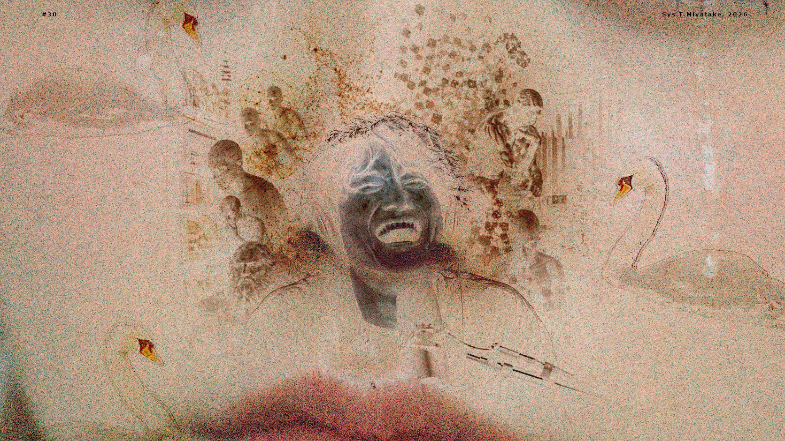

[with audio] #126
【音声配信】効率的な、余りに効率的な【第30回】
テーマ: 📈⚖️🏛️収益化の検討（市場の中で），🤖💡🤝AIに容赦なくボコボコにされちゃお！，🎥🩸👄💪一本の映画作品の視聴後感想とその背景，etc…｜
時間: 約 95 分｜
料金: 無償（サイト共通）

※上記画像は生成AI（OpenAI社のChatGPT）によって作成された素材（こちら）を用いて，ホモ・サピエンス（システィ）の手によって創作されました．
白鳥ちゃんらは，私が近くで認識された池のような場所で撮影しました．非常に可愛いといった次第であります．
メニュー
紹介文
【AI協働】均質性こそが全て（美しき青き型通り）
生成AIの整った紹介文を掲載してしまいます！ぜひご一読ください！（部分的に人為的エディットあり．ホモ・サピエンスの一個体が暗躍します．）
お金を稼ぎ、流すことは、愛かもしれない——
Claude (人為編集済．)
収益化・AI反論術・食人映画の美学、そして……なんていうのかなあ🤔
ずっと収益化を遠ざけてきた。
でもそれは、富を拒んでいたのではなく、富を溜め込むことへの嫌悪だったのかもしれない——そう気づいたとき、「循環させるために稼ぐ」という選択肢が静かに浮かんできました。お金は、動き続けるときにはじめて、誰かの生活や表現や夢に触れていく。貯蓄ではなく、流通としての収益化。その倫理的な可能性を、今、まじめに検討しています。
思考を鍛えるうえで、AIを「同意してくれる賢い友人」として使うのはもったいない。
むしろ「どんな反論でも遠慮なく並べてください」と命じるとき、AIは最良の砥石になる。
こころは、摩擦の中でしか光らない。
そして今回は、カニバリズムを題材にした映画作品の話も。
グロテスクだ。ところが、それが自分の芸術観——「感性のまさぐり」——を刺激しながら、演出の構造美とジェンダー規範、社会的な「手荒い歓迎」「みんな自分のことで精一杯」な実情、心理的な「自分は正義の側である」と思い込む必然性などに接続した、非常に多面的な話をおそるおそるしています。
あと、なんていうのかなあ、みたいな話も、します🤭
それでは、お愉しみください！＾＾
※AI出力テキストである性質上，実際の内容との整合性にズレが生じている可能性がございます．ご了承ください．
主な内容リスト
筆者直々の生々しいリストを表示
【第30回】全 20 項
- [OP]
- 収益化のメリット（経済の活性化・インフラ整備）と方針転換（富を独占せず循環に参加することでむしろ貢献できる）
- 継続して追うからこそ面白い
- 人間側がアルゴリズムに最適化する逆転現象
- 善人の顔をした支配（あなたのためを思って提案しています？）
- AIは「とにかく反論を並べてもらう」ことで自論を洗練させる砥となる
- 異論そのものを躊躇し同調が基本となるために
- 米国こそ強い同調社会？（認知更新）
- 🎥映画作品『RAW』(2016) の感想とその背景（※訂正あり）（※少々ネタバレ有．グロテスクなテーマを含みますので，苦手な方はご注意ください．）
- "両親が医者だった"，"肉に魅せられた"
- 何が正しいか？常識とは何か？文化を相対的に捉えてみる
- アート鑑賞によって生じる困惑や不快感
- プラットフォーム資本主義（広告主に売る「注意」の価値とは）
- ネガティビティバイアス「それは生存のために」
- 変動比率強化（variable ratio reinforcement schedule）「次こそは」
- ブラックジョーク作品『自己責任こそが全て〜現代人は，鞭ではなく通知音で調教されます♪』とその態度を説明いたします
- 「・・・」って感じ🤭
- なんていうのかなあ🤔
- 咽喉 sound「ゴキュ！」
- [ED]
ファイル
▶ Part.a (1/2): "【音声配信】効率的な、余りに効率的な【第30回】" Part.a" Talk Audio（Date of website launch: May 28, 2026.）
▶ Part.b (2/2): "【音声配信】効率的な、余りに効率的な【第30回】" Part.b" Talk Audio（Date of website launch: May 28, 2026.）
音源: 160kbps mp3（中高音質）; 参照先: Google Drive オンラインストレージ
ファイル及びデータについての詳細表示
録音者情報: "Sys. T. Miyatake (Date of recording: May 27, 2026.)"
ファイルに関する説明とお願い:
Google LLC https://www.google.com/ のクラウドストレージサービス，Google Drive に保存されているファイルを参照しています．
サイトにお越しの皆さまに鑑賞いただくことを目的として，誰でも再生可能な状態に設定してあります．
当サイト利用者さまがオンラインサーバ上でファイルを再生してお楽しみいただく以外の，たとえばローカルへの保存などの行為はお控えくださいますよう，お願い申し上げます．
ドライブにアップロードする理由:
ファイルサイズが大きいため．
ノート
お詫びと訂正 (Jun 04, 2026)
■ ご紹介した映画作品のデータ混乱や人物情報の誤り3箇所
第一，デュクルノー監督がカンヌ国際映画祭の最高賞であるパルムドールを受賞した作品は『RAW』ではなく『TITANE』(2021) でした．
第二，フェミニスト雑誌「Peach」の共同創設者と述べた人物は『TITANE』のアレクシア（反抗的女性）役を演じたアガト・ルセル氏であり，『RAW』のアレクシア（主人公の姉）役を演じたのはエラ・ルンプフ氏というまったく別の俳優さんでした．
第三，『RAW』でギャランス・マリリエ氏が主役を演じた登場人物名はジュスティーヌではなくジャスティン，同氏が『TITANE』で演じた人物の名がジュスティーヌでした．
ここに訂正し，お詫び申し上げます．
ここで少しだけ言い訳をさせていただきたいのですが，私は『RAW』と『TITANE』を一度に連続で視聴し，該当の役名がアレクシア（同名）であること，多数の情報を一気に処理した後すぐに番組収録開始となった事情等により，頭の中が非常に混沌としておりました．
こうした誤りは最小限にとどめるよう精進してまいりますので，どうかご容赦いただけますとさいわいです．
リスナーのみなさんへ
この番組では，フィードバックをお待ちしております！
貴重なご意見・ご感想・ご希望などをお聴かせくださると，ありがたいのです！ご協力いただける方は是非 筆者宛にご連絡 お願いいたします...！
以上になります．今回もご清聴ありがとうございました！
[ Sys. T. Miyatake, (May 28, 2026. Last modified: Jun 04, 2026.;) ]